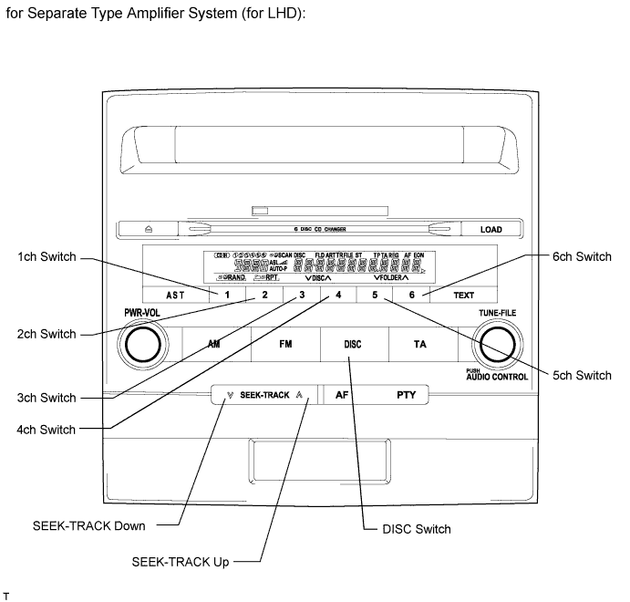
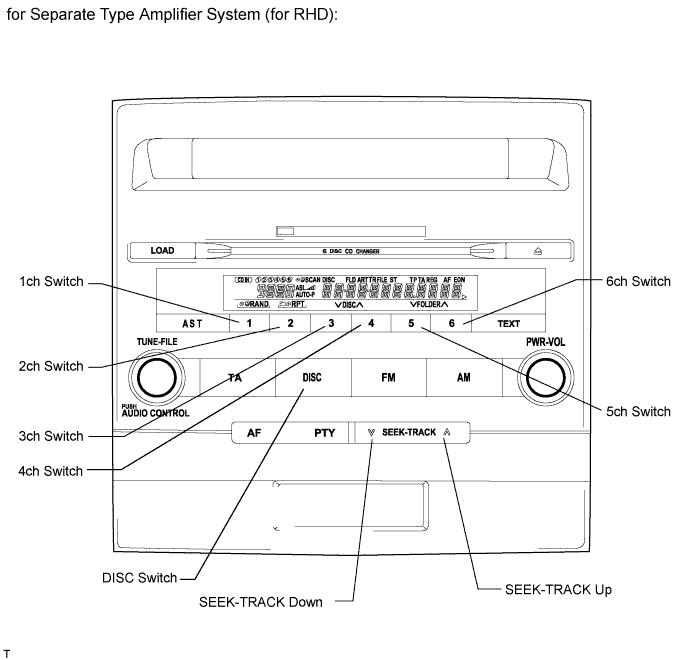
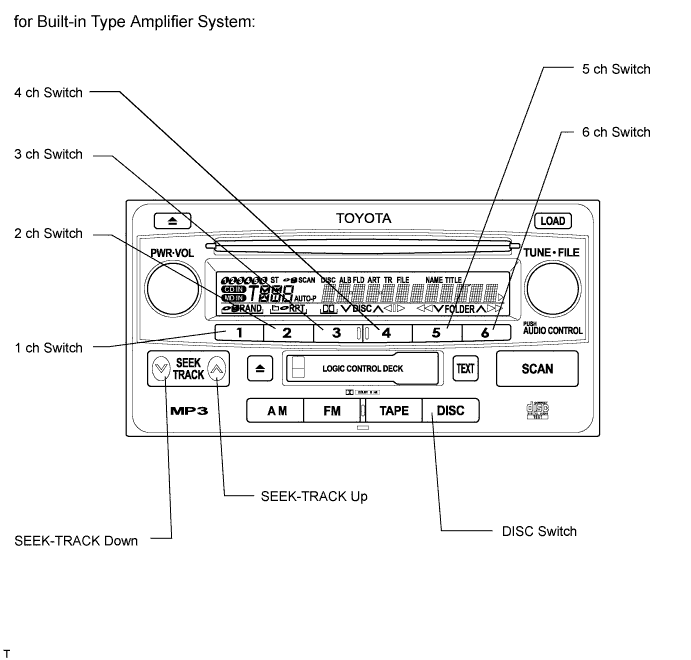
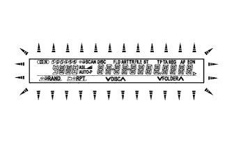
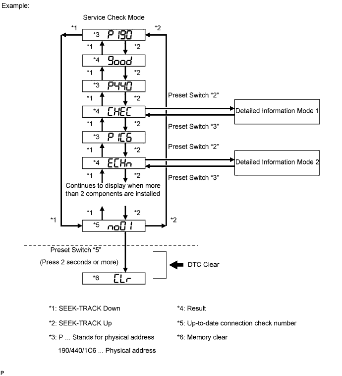
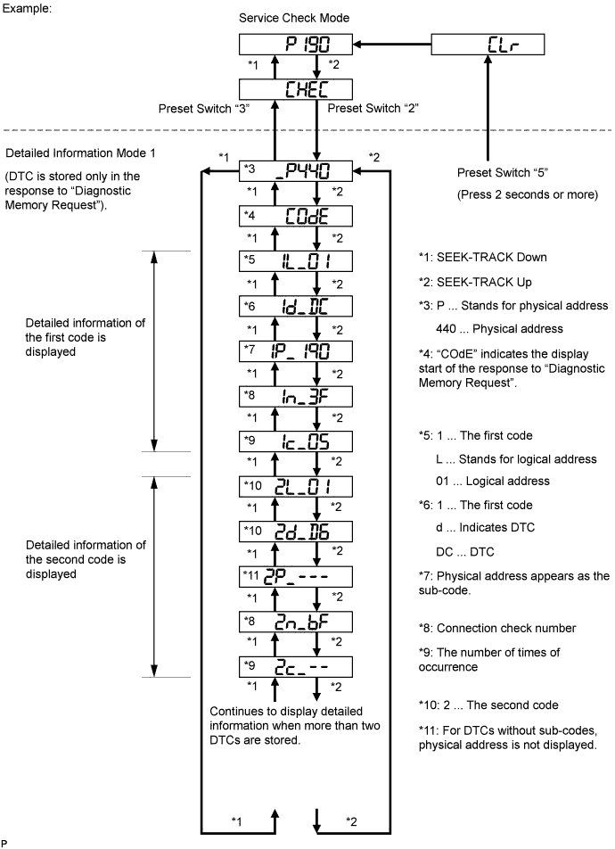
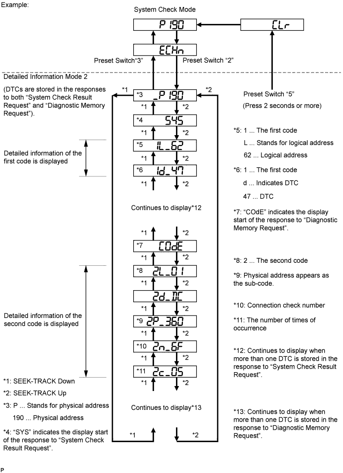
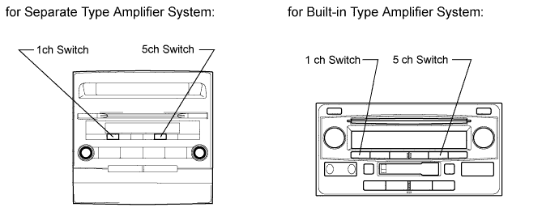

AUDIO AND VISUAL SYSTEM (w/o Multi-display) > DTC CHECK / CLEAR |
| STARTING DIAGNOSTIC MODE |



 |
Turn off the audio system and turn the engine switch on (ACC). While pressing the preset switches "1" and "6" at the same time, press the "DISC" switch 3 times.
| ALL ELEMENT ILLUMINATE MODE AND SWITCH INSPECTION MODE |
| SERVICE CHECK MODE |
Press the "SEEK-TRACK up" switch.
| FINISHING DIAGNOSTIC MODE |
Press the "DISC" switch for 2 seconds or more, or turn the engine switch off.
| CHECK DTC |
Reference:
In the system check mode, the system check and the diagnostic memory check are performed, and the check results are displayed in ascending order of the component codes (physical address).
| Terms | Meaning |
| Physical address (component code) | Three-digit code (in hexadecimal) given to each component of AVC-LAN. Individual symbol is provided corresponding to each function. |
| Logical address | Two-digit code (in hexadecimal) given to each function and component unit in each component of AVC-LAN. |
Service check result display
| Display | Original Language | Meaning | Action to be Taken |
| good | Good (normal) | No DTCs are stored in both "System Check Mode" and "Diagnostic Memory Mode". | - |
| nCon | No connection | System recognized component when it was registered, but component gives no response to "Diagnostic Mode ON Request". | Check power source circuit and communication circuit of component indicated by component code (physical address). |
| ECHn | Exchange | One or more DTCs for "Exchange" are stored in either "System Check Mode" or "Diagnostic Memory Mode". | Go to detailed information mode to check trouble area on DTC list. |
| CHEC | Check | When no DTCs are stored for "Exchange", one or more DTCs for "Check" are stored in either "System Check Mode" or "Diagnostic Memory Mode". | Go to detailed information mode to check trouble area on DTC list. |
| OLd | Old version | Old DTC application is identified and DTC is stored in either "System Check Mode" or "Diagnostic Memory Mode". | - |
| nrES | No response | Device gives no response to "System Check Mode ON Request", "System Check Result Request" or "Diagnostic Memory Request". | Check power source circuit and communication circuit of component indicated by component code (physical address). |
Device name and physical address.
| Physical Address No. | Name |
| 190 | Radio receiver |
| 440 | Stereo component amplifier |
Service check mode.
Press the "SEEK-TRACK" switch to see the check result of each component.
The component code (physical address) is displayed first, and then the check result follows.

Detailed Information Mode 1
Press preset switch "2" to go to "Detailed Information Mode 1".
Press the "SEEK-TRACK" switch to display the physical address and DTC of the component.
Press preset switch "3" to go to "Service Check Mode".
Distinguish between the displays of the responses to "System Check Result Request" and "Diagnostic Memory Request". In order to distinguish the information detected in "System Check Mode" and "Diagnostic Memory Mode" in "ECHn", "CHEC", and "old" in "Detailed Information Mode 1", refer to the following:

Detailed Information Mode 2
Press preset switch "2" to go to "Detailed Information Mode 2".
Press the "SEEK-TRACK" switch to display the physical address and DTC of the component.
Press preset switch "3" to go to "Service Check Mode".
Distinguish between the displays of the responses to "System Check Result Request" and "Diagnostic Memory Request". In order to distinguish the information detected in "System Check Mode" and "Diagnostic Memory Mode" in "ECHn", "CHEC", and "old" in "Detailed Information Mode 2", refer to the following:

| DTC CLEAR/RECHECK |

Clearing all DTC Memory (when clearing all the memory of the DTCs previously detected).
When preset switch "5" is pressed for 2 seconds or more during "Service Check Mode", the DTCs for all components are cleared. ("Clr" is displayed at this time).
Clearing Individual DTC Memory (when clearing the memory of the DTC previously detected individually).
When preset switch "5" is pressed for 2 seconds or more during "Detailed Information Mode 1" or "Detailed Information Mode 2", the DTCs for the target component are cleared.
Press preset switch "1" to perform the service check again, and check that no DTCs are displayed for all the component codes (physical address).